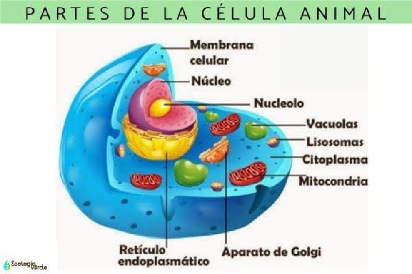
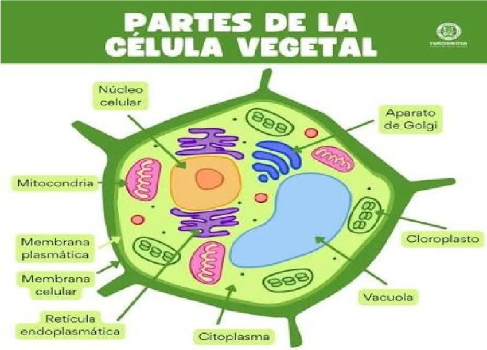

¿Alguna vez te preguntaste qué tenemos en común los seres humanos, los animales y las plantas? Aunque somos muy diferentes, todos estamos formados por células.
En este artículo vamos a conocer qué son las células, cuáles son sus partes y por qué son tan importantes para los seres vivos.

¿Qué es la célula?
Es la unidad básica de todos los seres vivos. Algunos organismos están formados por una única célula, mientras que otros, como los seres humanos, los animales y las plantas, están formados por muchas.
Tipos de células
Existen dos grandes tipos: procariota y eucariota. Las células procariotas son más simples y no poseen un núcleo definido. Las células eucariotas, en cambio, tienen un núcleo donde se encuentra el material genético.
Diferencias entre célula animal y vegetal
Las células animales y vegetales son eucariotas, pero presentan algunas diferencias. La célula vegetal posee una pared celular y cloroplastos, que le permiten realizar la fotosíntesis. La célula animal no tiene estas estructuras.
Partes principales de una célula
- Membrana celular: controla el ingreso y la salida de sustancias.
- Citoplasma: aquí se encuentran las diferentes estructuras celulares.
- Núcleo: contiene el material genético y dirige muchas de las actividades de las células.

Funciones
Las células cumplen funciones vitales, como obtener energía, crecer, reproducirse y responder a diferentes estímulos. Por eso, aunque son microscópicas, tienen una enorme importancia.
Las células son pequeñas, pero cumplen funciones fundamentales para todos los seres vivos. Estudiarlas nos ayuda a comprender cómo funciona la vida desde su unidad más básica.